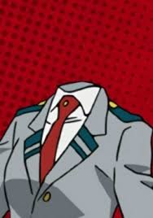

Одна из студенток академии Юэй. Тело Тору совершенно невидимо, поэтому понять, что она находится рядом можно только с помощью предметов одежды и аксессуаров. Из-за своей причуды вместо стандартного костюма героя Тору предпочитает являться голой, за исключением пары перчаток и ботинок. Весёлая и спокойная девушка, почти ко всему настроенная оптимистически. Плохо понимает, что значит быть невидимой, поскольку стесняется снимать свой геройский костюм перед другими людьми, хотя в этом наряде присутствуют только перчатки и ботинки.Причуда позволяет делать тело Хагакурэ абсолютно невидимым. Неизвестно, постоянно ли активна эта способность или может быть активирована и деактивирована по желанию.